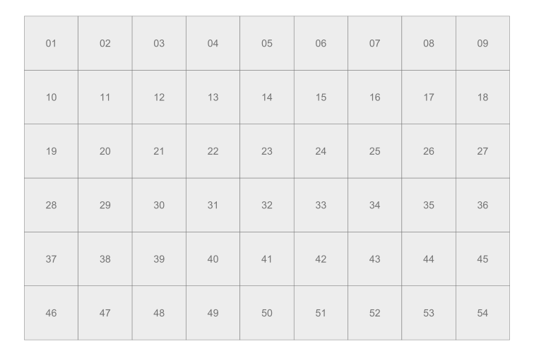
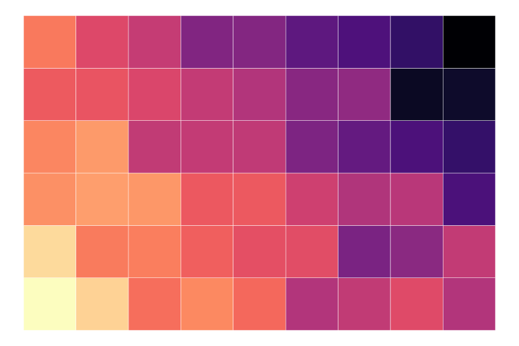
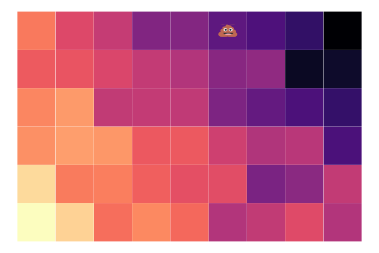
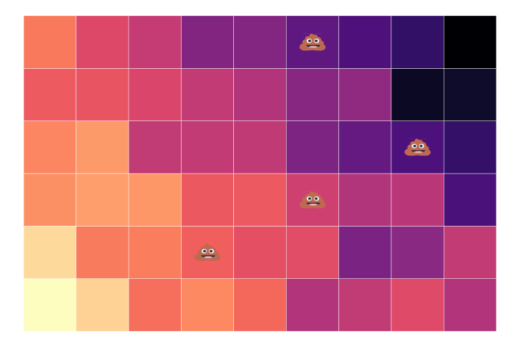
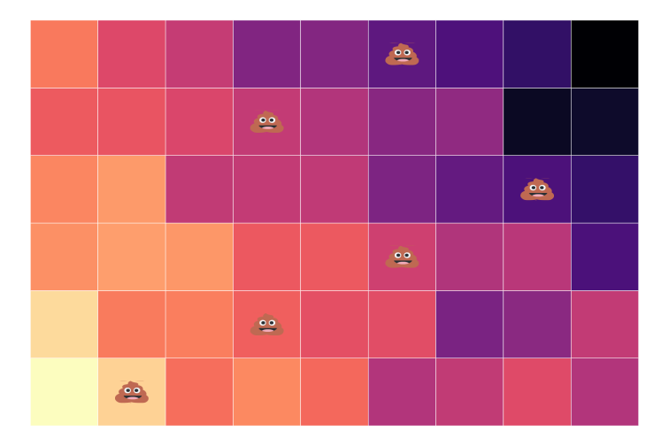
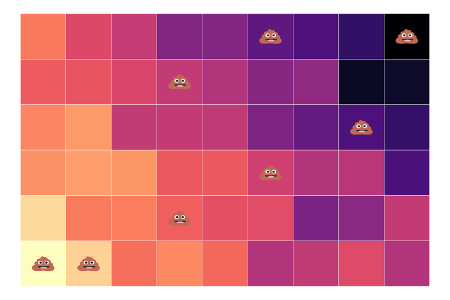
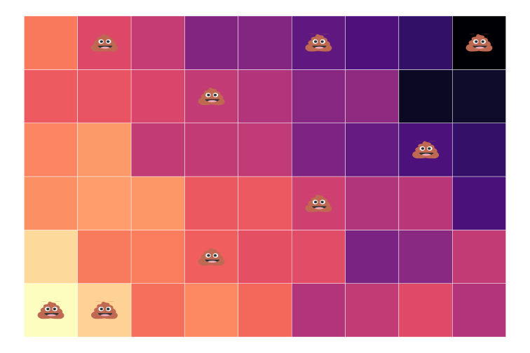
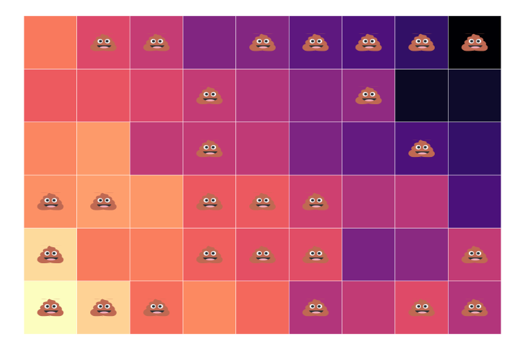
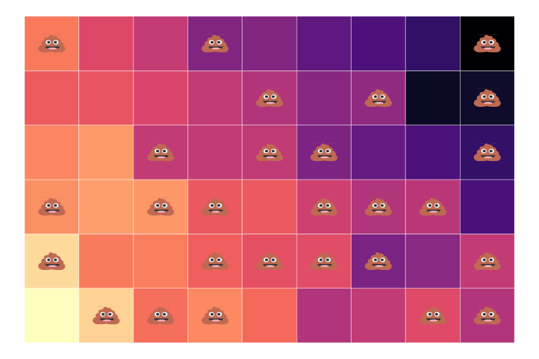
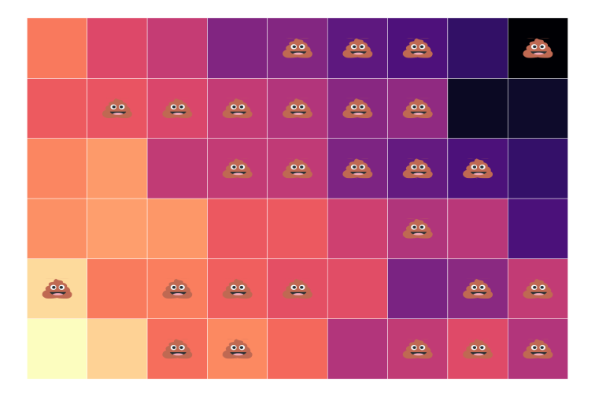

Intro
Most tasks in econometrics boil down to one of two goals:
\[
\begin{align}
y = \beta_0 + \beta_1 x_1 + \beta_2 x_2 + \cdots + \beta_k x_k + u
\end{align}
\]
- [Prediction:] Accurately and dependably predict/forecast \(\color{#6A5ACD}{y}\) using on some set of explanatory variables—doesn’t need to be \(x_1\) through \(x_k\). Focuses on \(\color{#6A5ACD}{\hat{y}}\). \(\beta_j\) doesn’t really matter.
- Causal estimation:1 Estimate the actual data-generating process—learning about the true, population model that explains how \(\color{#e64173}{y}\) changes when we change \(\color{#e64173}{x_j}\)—focuses on \(\color{#e64173}{\beta_j}\). Accuracy of \(\hat{y}\) is not important.
For the rest of the term, we will focus on causally estimating \(\color{#e64173}{\beta_j}\).
The challenges
As you saw in the data-analysis exercise, determining and estimating the true model can be pretty difficult—both practically and econometrically.
Practical challenges
- Which variables?
- Which functional form(s)?
- Do data exist? How much?
- Is the sample representative?
Econometric challenges
- Omitted-variable bias
- Reverse causality
- Measurement error
- How precise can/must we be?
Many of these challenges relate to exogeneity, i.e., \(\color{#314f4f}{\mathop{\boldsymbol{E}}\left[ u_i | X \right] = 0}\).
Causality requires us to hold all else constant (ceterus paribus).
It’s complicated
Occasionally, causal relationships are simply/easily understood, e.g.,
- What caused the forest fire?
- How did this baby get here?
Generally, causal relationships are complex and challenging to answer, e.g.,
- What causes some countries to grow and others to decline?
- What caused the capital riot?
- Did lax regulation cause Texas’s recent energy problems?
- How does the number of police officers affect crime?
- What is the effect of better air quality on test scores?
- Do longer prison sentences decrease crime?
- How did cannabis legalization affect mental health/opioid addiction?
Correlation ≠ Causation
You’ve likely heard the saying
Correlation is not causation.
The saying is just pointing out that there are violations of exogeneity.
Although correlation is not causation, causation requires correlation.
New saying:
Correlation plus exogeneity is causation.
Let’s work through a few examples.
Example: The causal effect of fertilizer[^2]
[^2] Many of the early statistical and econometric studies involved agricultural field trials.
Suppose we want to know the causal effect of fertilizer on corn yield.
Q: Could we simply regress yield on fertilizer?
A: Probably not (if we want the causal effect).
A: Omitted-variable bias: Farmers may apply less fertilizer in areas that are already worse on other dimensions that affect yield (soil, slope, water).
Violates all else equal (exogeneity). Biased and/or spurious results.
Q: So what should we do? . . .
A: Run an experiment! 💩
Example: The causal effect of fertilizer
Randomized experiments help us maintain all else equal (exogeneity).
We often call these experiments randomized control trials (RCTs)..super[^3]
.footnote[ [^3] Econometrics (and statistics) borrows this language from biostatistics and pharmaceutical trials.]
Imagine an RCT where we have two groups:
- Treatment: We apply fertilizer.
- Control: We do not apply fertilizer.
By randomizing plots of land into treatment or control, we will, on average, include all kinds of land (soild, slope, water, etc.) in both groups.
All else equal!
54 equal-sized plots

54 equal-sized plots of varying quality

54 equal-sized plots of varying quality plus randomly assigned treatment

54 equal-sized plots of varying quality plus randomly assigned treatment
54 equal-sized plots of varying quality plus randomly assigned treatment
54 equal-sized plots of varying quality plus randomly assigned treatment

54 equal-sized plots of varying quality plus randomly assigned treatment
54 equal-sized plots of varying quality plus randomly assigned treatment

54 equal-sized plots of varying quality plus randomly assigned treatment
54 equal-sized plots of varying quality plus randomly assigned treatment

54 equal-sized plots of varying quality plus randomly assigned treatment

54 equal-sized plots of varying quality plus randomly assigned treatment

54 equal-sized plots of varying quality plus randomly assigned treatment

54 equal-sized plots of varying quality plus randomly assigned treatment

Example: The causal effect of fertilizer
We can estimate the causal effect of fertilizer on crop yield by comparing the average yield in the treatment group (💩) with the control group (no 💩).
\[
\begin{align}
\overline{\text{Yield}}_\text{Treatment} - \overline{\text{Yield}}_\text{Control}
\end{align}
\]
Alternatively, we can use the regression
\[
\begin{align}
\text{Yield}_i = \beta_0 + \beta_1 \text{Trt}_i + u_i \tag{1}
\end{align}
\]
where \(\text{Trt}_i\) is a binary variable (=1 if plot \(i\) received the fertilizer treatment).
Q: Should we expect \((1)\) to satisfy exogeneity? Why?
A: On average, randomly assigning treatment should balance trt. and control across the other dimensions that affect yield (soil, slope, water).
Example: Returns to education
Labor economists, policy makers, parents, and students are all interested in the (monetary) return to education.
Thought experiment: - Randomly select an individual. - Give her an additional year of education. - How much do her earnings increase?
This change in earnings gives the causal effect of education on earnings.
Q: Could we simply regress earnings on education?
A: Again, probably not if we want the true, causal effect.
- People choose education based upon many factors, e.g., ability.
- Education likely reduces experience (time out of the workforce).
- Education is endogenous (violates exogeneity).
The point (2) above also illustrates the difficulty in learning about educations while holding all else constant.
Many important variables have the same challenge—gender, race, income.
Q: So how can we estimate the returns to education?
Option 1: Run an experiment.
- Randomly assign education (might be difficult).
- Randomly encourage education (might work).
- Randomly assign programs that affect education (e.g., mentoring).
Option 2: Look for a natural experiment
— a policy or accident in society that arbitrarily increased education for one subset of people.
- Admissions cutoffs
- Lottery enrollment and/or capacity constraints
Real-world experiments
Both examples consider real experiments that isolate causal effects.
Characteristics
- Feasible—we can actually (potentially) run the experiment.
- Compare individuals randomized into treatment against individuals randomized into control.
- Require “good” randomization to get all else equal (exogeneity).
Note: Your experiment’s results are only as good as your randomization.
Unfortunate randomization
The ideal experiment
The ideal experiment would be subtly different.
Rather than comparing units randomized as treatment vs. control, the ideal experiment would compare treatment and control for the same, exact unit.
\[
\begin{align}
y_{\text{Treatment},i} - y_{\text{Control},i}
\end{align}
\]
which we will write (for simplicity) as
\[
\begin{align}
y_{1,i} - y_{0,i}
\end{align}
\]
This [ideal experiment is clearly infeasible.]1, but it creates nice notation for causality (the Rubin causal model/Neyman potential outcomes framework).
The ideal data for 10 people
#> i trt y1i y0i
#> 1 1 1 5.01 2.56
#> 2 2 1 8.85 2.53
#> 3 3 1 6.31 2.67
#> 4 4 1 5.97 2.79
#> 5 5 1 7.61 4.34
#> 6 6 0 7.63 4.15
#> 7 7 0 4.75 0.56
#> 8 8 0 5.77 3.52
#> 9 9 0 7.47 4.49
#> 10 10 0 7.79 1.40
Calculate the causal effect of trt. \[
\begin{align}
\tau_i = y_{1,i} - y_{0,i}
\end{align}
\] for each individual \(i\).
The ideal data for 10 people
#> i trt y1i y0i effect_i
#> 1 1 1 5.01 2.56 2.45
#> 2 2 1 8.85 2.53 6.32
#> 3 3 1 6.31 2.67 3.64
#> 4 4 1 5.97 2.79 3.18
#> 5 5 1 7.61 4.34 3.27
#> 6 6 0 7.63 4.15 3.48
#> 7 7 0 4.75 0.56 4.19
#> 8 8 0 5.77 3.52 2.25
#> 9 9 0 7.47 4.49 2.98
#> 10 10 0 7.79 1.40 6.39
Calculate the causal effect of trt. \[
\begin{align}
\tau_i = y_{1,i} - y_{0,i}
\end{align}
\] for each individual \(i\).
The ideal data for 10 people
#> i trt y1i y0i effect_i
#> 1 1 1 5.01 2.56 2.45
#> 2 2 1 8.85 2.53 6.32
#> 3 3 1 6.31 2.67 3.64
#> 4 4 1 5.97 2.79 3.18
#> 5 5 1 7.61 4.34 3.27
#> 6 6 0 7.63 4.15 3.48
#> 7 7 0 4.75 0.56 4.19
#> 8 8 0 5.77 3.52 2.25
#> 9 9 0 7.47 4.49 2.98
#> 10 10 0 7.79 1.40 6.39
Calculate the causal effect of trt. \[
\begin{align}
\tau_i = y_{1,i} - y_{0,i}
\end{align}
\] for each individual \(i\).
The mean of \(\tau_i\) is the
average treatment effect (ATE).
Thus, \(\color{#e64173}{\overline{\tau} = 3.82}\)
This model highlights the fundamental problem of causal inference. \[
\begin{align}
\tau_i = \color{#e64173}{y_{1,i}} &- \color{#6A5ACD}{y_{0,i}}
\end{align}
\]
The challenge:
If we observe \(\color{#e64173}{y_{1,i}}\), then we cannot observe \(\color{#6A5ACD}{y_{0,i}}\).
If we observe \(\color{#6A5ACD}{y_{0,i}}\), then we cannot observe \(\color{#e64173}{y_{1,i}}\).
So a dataset that we actually observe for 6 people will look something like
#> i trt y1i y0i
#> 1 1 1 5.01 NA
#> 2 2 1 8.85 NA
#> 3 3 1 6.31 NA
#> 4 4 1 5.97 NA
#> 5 5 1 7.61 NA
#> 6 6 0 NA 4.15
#> 7 7 0 NA 0.56
#> 8 8 0 NA 3.52
#> 9 9 0 NA 4.49
#> 10 10 0 NA 1.40
We can’t observe \(\color{#e64173}{y_{1,i}}\) and \(\color{#6A5ACD}{y_{0,i}}\).
But, we do observe
\(\color{#e64173}{y_{1,i}}\) for \(i\) in 1, 2, 3, 4, 5
\(\color{#6A5ACD}{y_{0,j}}\) for \(j\) in 6, 7, 8, 9, 10
Q: How do we “fill in” the NAs and estimate \(\overline{\tau}\)?
Causally estimating the treatment effect
Notation: Let \(D_i\) be a binary indicator variable such that
- \(\color{#e64173}{D_i=1}\) if individual \(\color{#e64173}{i}\) is treated.
- \(\color{#6A5ACD}{D_i=0}\) if individual \(\color{#6A5ACD}{i}\) is not treated (control group).
Then, rephrasing the previous slide,
- We only observe \(\color{#e64173}{y_{1,i}}\) when \(\color{#e64173}{D_{i}=1}\).
- We only observe \(\color{#6A5ACD}{y_{0,i}}\) when \(\color{#6A5ACD}{D_{i}=0}\).
Q: How can we estimate \(\overline{\tau}\) using only \(\left(\color{#e64173}{y_{1,i}|D_i=1}\right)\) and \(\left(\color{#6A5ACD}{y_{0,i}|D_i=0}\right)\)?
Q: How can we estimate \(\overline{\tau}\) using only \(\left(\color{#e64173}{y_{1,i}|D_i=1}\right)\) and \(\left(\color{#6A5ACD}{y_{0,i}|D_i=0}\right)\)?
Idea: What if we compare the groups’ means? I.e., \[
\begin{align}
\color{#e64173}{\mathop{Avg}\left( y_i\mid D_i = 1 \right)} - \color{#6A5ACD}{\mathop{Avg}\left( y_i\mid D_i =0 \right)}
\end{align}
\]
Q: When does this simple difference in groups’ means provide information on the causal effect of the treatment?
Q.sub[2.0]: Is \(\color{#e64173}{\mathop{Avg}\left( y_i\mid D_i = 1 \right)} - \color{#6A5ACD}{\mathop{Avg}\left( y_i\mid D_i =0 \right)}\) a good estimator for \(\overline{\tau}\)?
Assumption: Let \(\tau_i = \tau\) for all \(i\).
This assumption says that the treatment effect is equal (constant) across all individuals \(i\).
Note: We defined
\[
\begin{align}
\tau_i = \tau = \color{#e64173}{y_{1,i}} - \color{#6A5ACD}{y_{0,i}}
\end{align}
\]
which implies
\[
\begin{align}
\color{#e64173}{y_{1,i}} = \color{#6A5ACD}{y_{0,i}} + \tau
\end{align}
\]
Q.sub[3.0]: Is \(\color{#e64173}{\mathop{Avg}\left( y_i\mid D_i = 1 \right)} - \color{#6A5ACD}{\mathop{Avg}\left( y_i\mid D_i =0 \right)}\) a good estimator for \(\tau\)?
Difference in groups’ means
\(\quad \color{#ffffff}{\Bigg|}=\color{#e64173}{\mathop{Avg}\left( y_i\mid D_i = 1 \right)} - \color{#6A5ACD}{\mathop{Avg}\left( y_i\mid D_i =0 \right)}\) . . .
\(\quad \color{#ffffff}{\Bigg|}=\color{#e64173}{\mathop{Avg}\left( y_{1,i}\mid D_i = 1 \right)} - \color{#6A5ACD}{\mathop{Avg}\left( y_{0,i}\mid D_i =0 \right)}\) . . .
\(\quad \color{#ffffff}{\Bigg|}=\color{#e64173}{\mathop{Avg}\left( \color{#000000}{\tau \: +} \: \color{#6A5ACD}{y_{0,i}} \mid D_i = 1 \right)} - \color{#6A5ACD}{\mathop{Avg}\left( y_{0,i}\mid D_i =0 \right)}\) . . .
\(\quad \color{#ffffff}{\Bigg|}=\tau + \color{#e64173}{\mathop{Avg}\left(\color{#6A5ACD}{y_{0,i}} \mid D_i = 1 \right)} - \color{#6A5ACD}{\mathop{Avg}\left( y_{0,i}\mid D_i =0 \right)}\) . . .
\(\quad \color{#ffffff}{\Bigg|}= \text{Average causal effect} + \color{#FFA500}{\text{Selection bias}}\)
So our proposed group-difference estimator give us the sum of
- \(\tau\), the causal, average treatment effect that we want
- Selection bias: How much trt. and control groups differ (on average).